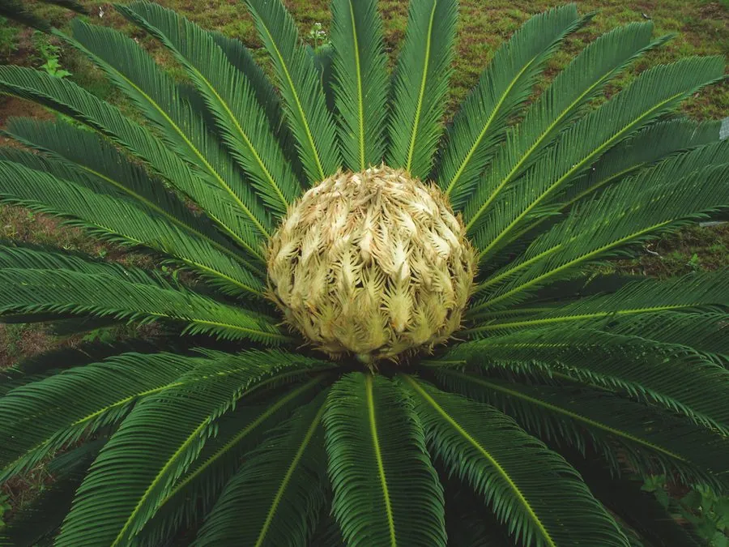

蕨类与裸子植物 · 植物界
苏铁 Cycas revoluta

苏铁俗称铁树，茎干粗壮似柱，羽状叶坚硬如铁，是现存最古老的种子植物之一，开花结果十分罕见。
- 分类
- 门裸子植物门纲苏铁纲目苏铁目科苏铁科属苏铁属
- 栖息环境
- 亚热带沿海山坡、灌丛与疏林，喜温暖干燥和充足阳光
- 地理分布
- 原产中国福建、广东、台湾及日本南部沿海地区
- 保护级别
- IUCN 暂无评估；中国国家一级重点保护野生植物
物种志
苏铁是苏铁科常绿木本植物，树干粗壮呈圆柱形，高可达 2–5 m，表面密布老叶柄留下的鳞片状疤痕，看起来像披着铠甲。大型羽状叶螺旋状排列在茎顶，小叶坚硬、线形，边缘反卷，深绿色而有光泽，长 0.5–2 m。它是雌雄异株植物：雄株顶端长出圆柱形的雄球花，雌株则生有扁平的雌球花，种子近球形，成熟时橙红色。
苏铁原产中国南部与日本南部，喜温暖干燥和阳光充足的环境，耐旱、耐瘠薄，生长极慢，民间有“铁树开花”的说法，形容其开花罕见。它主要靠种子繁殖，也可分蘖。苏铁是现存最原始的种子植物之一，对研究裸子植物演化有重要价值，也是常见的观赏盆栽。由于长期人为采挖和生境破坏，野生苏铁属植物普遍濒危，中国将其列为国家一级重点保护野生植物。
形态与习性
- 株高2–5 m，茎干粗壮似柱
- 叶大型羽状复叶，长 0.5–2 m
- 雌雄异株，雄球花圆柱形
- 种子近球形，成熟时橙红色
- 生长速度极慢，数十年才长高少许
- 繁殖种子繁殖或分蘖
- 用途观赏盆栽与科研材料
趣味知识
- 苏铁茎干上的“鳞片”其实是老叶柄脱落后留下的疤痕。
- 所谓“铁树开花”并非不可能，只是开花周期长、条件苛刻。
- 苏铁的种子外层有毒，误食会引起中毒，不能食用。